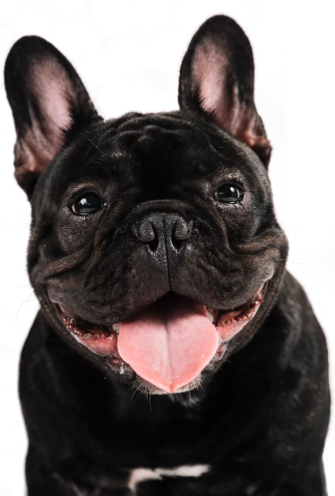
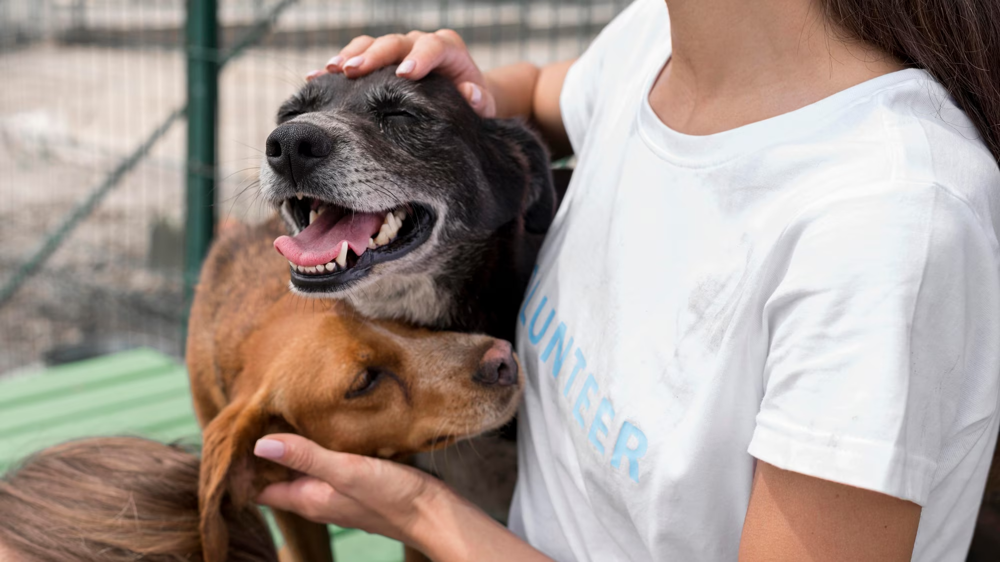
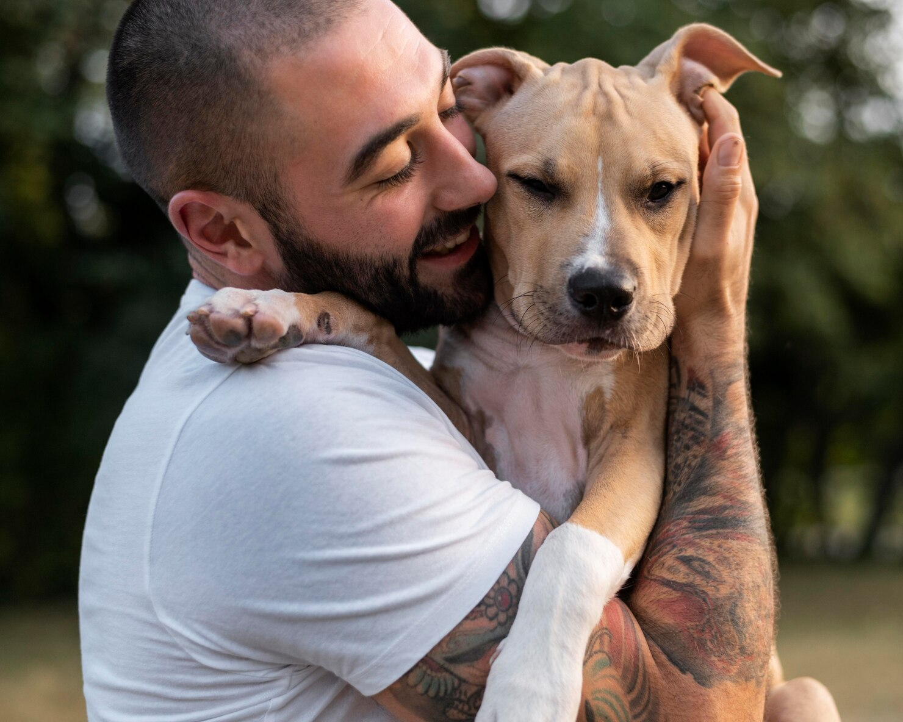
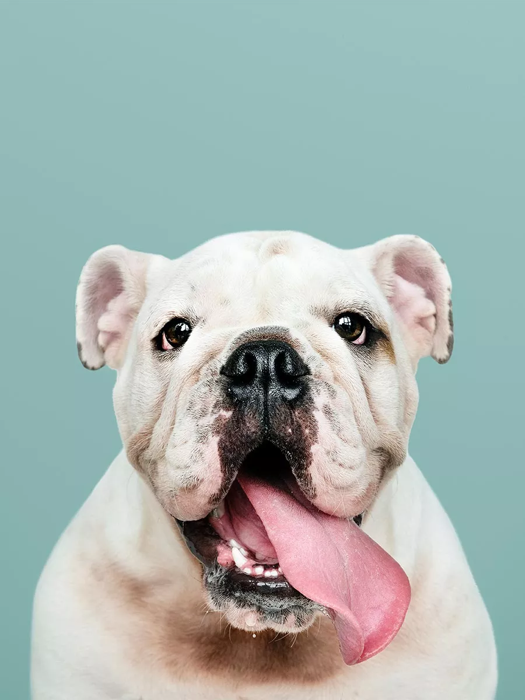
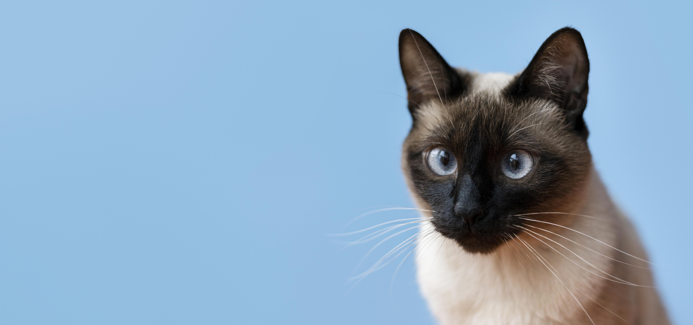

Do total das transações feitas através do PetCarinho, 70% do dinheiro arrecadado é doado diretamente às ONGs parceiras. Isso ajuda a financiar os cuidados e o bem-estar dos animais que eles resgatam e abrigam.
Faça um amigo de patas feliz!
Conecte-se com animais adoráveis em busca de carinho e compartilhe momentos de alegria.

Como a PetCarinho Funciona?
É simples! Com o PetCarinho, você pode:

Pesquisar animais disponíveis para cuidar na sua área
Encontre animais adoráveis na sua área com facilidade. Explore perfis e escolha o animal com o qual deseja fazer carinho.

Agendar um encontro para fazer carinho
Faça carinho, brinque e compartilhe momentos felizes com os animais escolhidos. Deixe sua marca positiva na vida deles.

Compartilhar amor e alegria com um amigo de patas
Far far away, behind the word mountains, Separated they live in Bookmarksgrove right at the coast of the Semantics, a large language ocean.
Sobre nós
Juntos por uma causa.
Estamos comprometidos em fazer a diferença na vida dos animais em necessidade. Trabalhamos em estreita colaboração com diversas Organizações Não Governamentais (ONGs) de proteção animal em todo o país para trazer até você os animais mais adoráveis e carentes. Usando o PetCarinho, você:
- Contribui diretamente para o financiamento das ONGs de proteção animal.
- Oferece interação e carinho regular para animais em abrigos, melhorando seu bem-estar emocional.
- Ajuda na socialização e no desenvolvimento emocional de animais resgatados.
- Facilita a busca de lares permanentes para os animais, já que eles estão mais saudáveis e sociáveis.
- Permite que as ONGs foquem mais na adoção, pois você auxiliará nos cuidados básicos.

Planos
Com os nossos planos de carinho, você pode fazer a diferença na vida dos animais todos os dias. Escolha o seu plano e comece a espalhar amor e alegria para nossos amigos de patas.
Um dia de carinho
R$5 por diária
- Acesso ilimitado para fazer carinho a animais disponíveis em um dia.
- Receba atualizações exclusivas sobre animais beneficiados pelo seu carinho.
- Sinta-se bem por contribuir diariamente para a causa do bem-estar animal.
Amigo de Patas Mensal
R$25 por mês
- Carinho ilimitado durante todo o mês.
- Prioridade na seleção de animais para carinho.
- Atualizações reguladores sobre o impacto do seu apoio nas ONGs parceiras.
Herói Peludo Anual
R$200 ao ano
- Acesso ilimitado durante o ano inteiro.
- Escolha preferencial de animais para carinho.
- Certificado de Herói Peludo para exibir o seu compromisso com os animais.
Dúvidas Comuns
Encontre respostas para suas dúvidas sobre fazer carinho e apoiar a causa animal.

Posso escolher o tipo de animal que desejo fazer carinho?
Sim, você pode escolher o tipo de animal que deseja fazer carinho. O aplicativo permite que você selecione as preferências, como cães, gatos, ou outros, para encontrar o animal que combina com você.
É seguro usar o PetCarinho?
Sim, o PetCarinho se preocupa com a segurança dos usuários e dos animais. Realizamos verificações e colaboramos com abrigos e ONGs respeitáveis para garantir experiências seguras e positivas.
Como faço para adotar um animal através do PetCarinho?
O PetCarinho foca em proporcionar carinho aos animais disponíveis. Se você estiver interessado em adotar um animal, recomendamos entrar em contato diretamente com as ONGs parceiras, que estarão felizes em ajudar você a encontrar seu novo amigo de patas.
Depoimentos
Estava procurando uma maneira de fazer trabalho voluntário com animais, mas meu horário não permitia. O PetCarinho me deu a oportunidade perfeita de ajudar quando posso.
Os planos de carinho são ótimos. Escolhi o Plano Mensal e posso fazer carinho sempre que quiser. É uma maneira maravilhosa de relaxar e fazer o bem ao mesmo tempo.
Ana Silveira
Estava procurando uma maneira de fazer trabalho voluntário com animais, mas meu horário não permitia. O PetCarinho me deu a oportunidade perfeita de ajudar quando posso.
João da Silva
Blog Carinhoso
Descubra Histórias, Dicas e Inspiração para Amantes de Animais.
Como o carinho com animais pode melhorar a sua saúde mental?
Descubra como a interação com animais pode ter um impacto positivo na sua saúde mental.

5 Conselhos para Fazer Carinho em Animais Desconhecidos.
Fazer carinho em animais desconhecidos é uma experiência incrível, mas exige cuidados.
Dicas para Encontrar o Animal Perfeito para Fazer Carinho.
Encontrar o animal perfeito para fazer carinho é uma experiência gratificante, mas pode ser desafiador

Como as ONGs de Proteção Animal Cuidam dos Animais Resgatados?
Descubra o incrível esforço que é dedicado ao cuidado e reabilitação dos animais resgatados antes de encontrarem seus lares para sempre.
Contato
-
Endereço
Rua das Amizades, 452, Bairro dos Animais Felizes, Cidade do Carinho/Estado dos Peludos.
-
Telefone
(13) 4002-8922
-
E-mail
contato@petcarinho.com